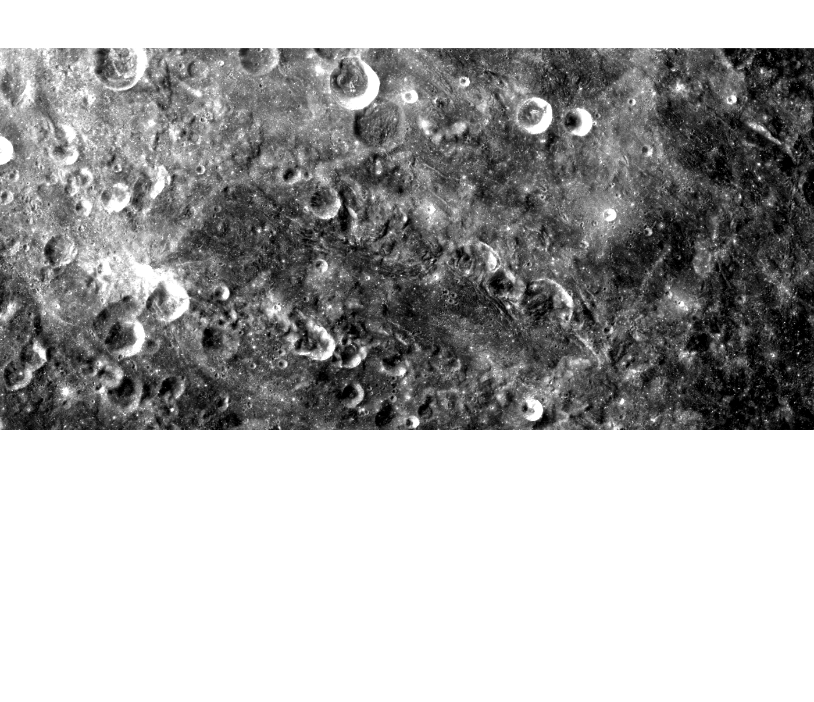
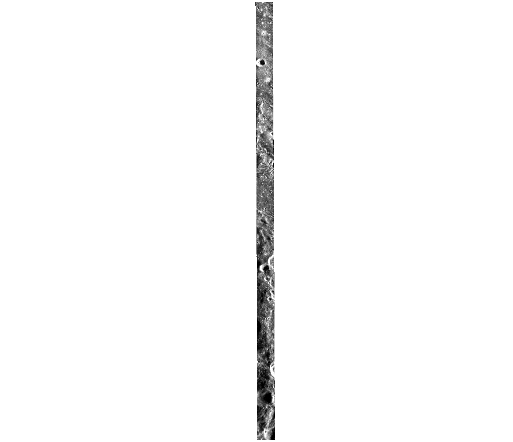

ROI_054
测试集
- 划分
- 测试集
- patch 对
- 168
- 带评测真值点的 patch
- 145，共 1187 对点
- 中心
- 3.5°S，127.3°W
- 范围
- 7.7°S–0.7°N，127.7°W–126.9°W
- 控制点
- 30 对（标注规程）
| 光学原图 CE-2 DOM | SAR 原图 Mini-RF | 重叠区影像 光学、SAR 各一幅 | |
|---|---|---|---|
| 产品 | CE2_GRAS_DOM_07m_H107_03S131W_ACE2_GRAS_DOM_07m_H108_03S123W_A | LSZ_01526_2CD_EKU_06S233_V1 | — |
| 成像时刻（UTC） | — | 2009-10-26 22:39:59 | — |
| 投影 | Mercator，标准纬线 -7° | 等距圆柱，中心经度 180° | Mercator，标准纬线 -7° |
| 像元 | 7 m | 7.4032 m | 7.5 m |
| 图像尺寸 | 32,348 × 30,273 像素（每幅） | 2,765 × 52,703 像素 | 3,251 × 33,915 像素 |
| 入射角 | — | 47.55° | — |
| 视向 | — | 左视 | — |
重叠区影像：光学与 SAR 公共覆盖区外扩 1.2 倍，两者重采样到 7.5 m 的同一网格；patch 从这两幅上切出。
原始产品


重叠区影像


每 114 × 114 像素取均值，黑色是没有数据的区域。